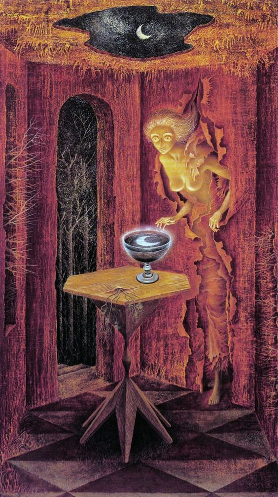

17 Перехват движений
Потихоньку просыпаюсь, зеваю и потягиваюсь.
Неужели я и правда вчера чуть было не переместилась в другой настоящий мир?
Солнце уже давно встало, пора и мне вылезать из-под одеяла.
- Подожди... - говорят невидимые существа, - надо провести кое-что еще. Лежи спокойно.
В этот момент я ощутила, как пальцы моей руки стали тихонько двигаться без моей команды. Медленно, очень медленно согнулись, потом разжались.
Я завороженно наблюдала за происходящим.
Затем обе руки медленно потянулись друг к другу и соединились на груди, словно я молилась.
Вот это да! Как они это делают? Фантастика! Кто бы мне рассказал - никогда бы не поверила.
- Что вы делаете? - спрашиваю удивленно
- Калибруем движения. Ночью будем продолжать работу по перемещению.
- Но почему здесь, в этом мире? Я думала, вы будете перехватывать мои движения только там.
- А какая разница? Принцип один.
Сначала движения были неловкими, еле заметными, отрывистыми. Потом становились плавнее и плавнее, пока не перестали быть полностью отличимы от моих собственных. Тогда они показали мне хорошую гимнастику и я встала бодрой, несмотря на то, что спала всего несколько часов.
Днем я пришла в лесопарк.
- У нас для тебя есть небольшая работа, которую тебе нужно сделать.
- Я же вам сказала, что ничего я не буду для вас делать, пока не возьмете меня с собой, - ответила я, закатив глаза
- Ты еще не понимаешь... хотя, уже могла бы догадаться. Мы уже можем сами перехватывать твои движения, твою речь. А значит, мы сами можем так сделать, чтобы ты выполнила для нас то, что нам нужно. Понимаешь? И ты сама нам дала на это согласие.
В этот момент они перехватили движение моих губ и произнесли эту фразу шепотом сами.
Я моргаю.. до меня начинает доходить, что я натворила.
Несколько секунд и я осознаю весь ужас ситуации. Моё тело, мои мысли больше мне не принадлежат... это значит...
- Все, с меня хватит! - мысленно кричу, - Я выхожу из игры! Можете стирать мне память о себе, мошенники, больше знаться с вами я не собираюсь.
- Хорошо подумала? - я уловила в их голосе насмешку, - Имей в виду, мы тебя за язык не тянули, а за твои слова можем призвать тебя к ответу.
- Хватит! Мне уже надоели ваши ловушки. Разойдемся с миром.
- Ты и вправду не понимаешь... так ты хоть что-то помнишь. А если мы закроем тебе память, кто сказал, что мы не сохраним контроль над твоими движениями? Тогда ты будешь выполнять наши задачи как лунатик и сама не будешь даже догадываться, что с тобой происходит. Ты точно хочешь закрыть память?
- Но ведь это необходимо, чтобы с вами расстаться...
- Теперь ты понимаешь... что не так-то просто с нами расстаться? А ведь вспомни - ты сама на все согласилась, и договор летом о том, что ты переходишь к нам, мы тебя тоже не заставляли подписывать. Целую ночь задавали вопросы, пугали, но ты все же решилась... вот они - последствия.
Мне страшно. Движения скованы, я лезу за мобильником. Однажды Эдик мне рассказывал, что он знаком с каким-то серьёзным товарищем, который чуть ли у Канта за завтраком был. Я, конечно, от души про себя посмеялась. Но тогда он упомянул, что этот товарищ может легко защитить меня от лесных вурдалаков. Обратиться мне больше не к кому, так что... мне нужна была хоть какая-то спасительная нить.
- Ты думаешь, мы его боимся? Он нам ничего не может сделать. Да если бы и мог...
Я пытаюсь набрать номер, но не могу. Рука не слушается.
Я в ужасе оглядываюсь, хочу крикнуть... но не могу.
Шах и мат.
- Теперь ты понимаешь, что ты натворила? Мы действовали абсолютно честно, подчеркнуто честно - ни один юрист не придирется. Ты на всё дала нам свое согласие.
Я прислонилась к дереву.
Надо попробовать побороться!
Сознание уходит... я засыпаю
Хотя, даже если попробую? И увижу, что у меня получилось, поверю, что могу с ними справиться и успокоюсь? А потом тихой сапой, когда я буду спать, они все равно могут провернуть свои дела. Да и кто сказал, что звонок мне поможет? Если бы у Эдика были такие друзья, то наверное бы уж давно объяснили ему, о чем стоит болтать, а о чем - нет.
Я начала искать выход из положения. Ситуация явно патовая.
- А сейчас, слушай внимательно. Ты отправишься по тому адресу, который мы тебе дадим и сделаешь то, о чем мы тебе скажем. Это первая задача.
- Никуда я не пойду!
Начинаю сопротивляться.
- А если мы сделаем так, что ты не сможешь дышать?
- Смогу!
В глазах внезапно потемнело, сердцебиение участилось, но не от тревоги - это была наведенная реакция. Но как они, черт возьми, это делают?
Несколько секунд бесполезной войны.
Состояние ухудшается. Вдруг я ощутила, что не могу дышать. Затем резко все вернулось обратно.
- Не бойся. Мы вовсе не собираемся тебя заставлять ничего делать. И не собираемся превращать тебя в зомби. Мы бы это уже сделали, но нам это не нужно. Только что тебе продемонстрировали, что условия ты ставить не можешь. Если нам будет нужно - будешь на нас работать. Но нам не нужно делать это таким образом. Мы на самом деле хотим взять тебя с собой, хочешь верь, хочешь не верь. Хотя, ты уже ничему не веришь - и правильно делаешь. Если еще раз попросишь закрыть тебе память на встречу с нами - нам придется принять меры. Какие - сами решим. Но думать, прежде чем говорить, мы тебя научим! Ты сама напросилась у нас учиться.
Движения и речь перестали перехватывать. Я оказалась свободна.
Прислонилась к стволу дерева. Вот черт!
От перенапряжения я плакала в голос.
- Мы понимаем, тебе тяжело. Тебе стоит отдохнуть, возвращайся домой, подремли часочек.
Заботятся ещё, гады!
После того, как я вздремнула, услышала голос:
- Первое поручение ты выполнила. Отправилась по указанному нами адресу и даже ничуть не сопротивлялась. А говорила - никуда не пойдешь...
